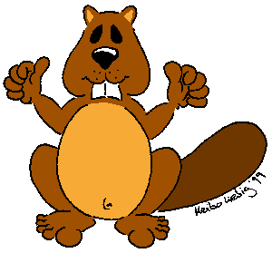

mier über üs

Alles isch genau glich wia bi jedera andera Stufa vo dä Pfadi au.
Wär
ghört zur Biberstufa?
Chind vo 5 bis 6 Johr wo chli Pfadiluft schnuppera möchten.
Was
wird i dr’Biberstufa gmacht?
Gmeinsam mit üserna Fründa werden mir ca. 1 mol im Monät an Samstig
Nomittag zäma ver-bringa, drbi vil erleba und jedi Mengi Spass ha.
Warum
a Biberstufa?
Wil mier scho dä Chlinsta d’Möglichkeit wänn gä s’Abentür
Natur und d’Gemeinschaft inra Gruppa kenna z’lera.